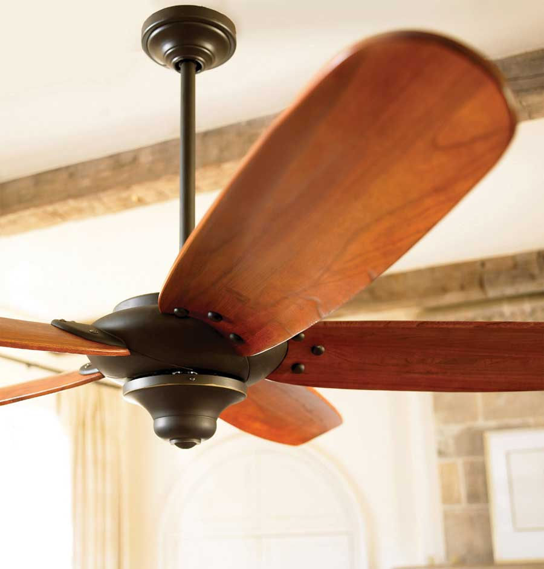
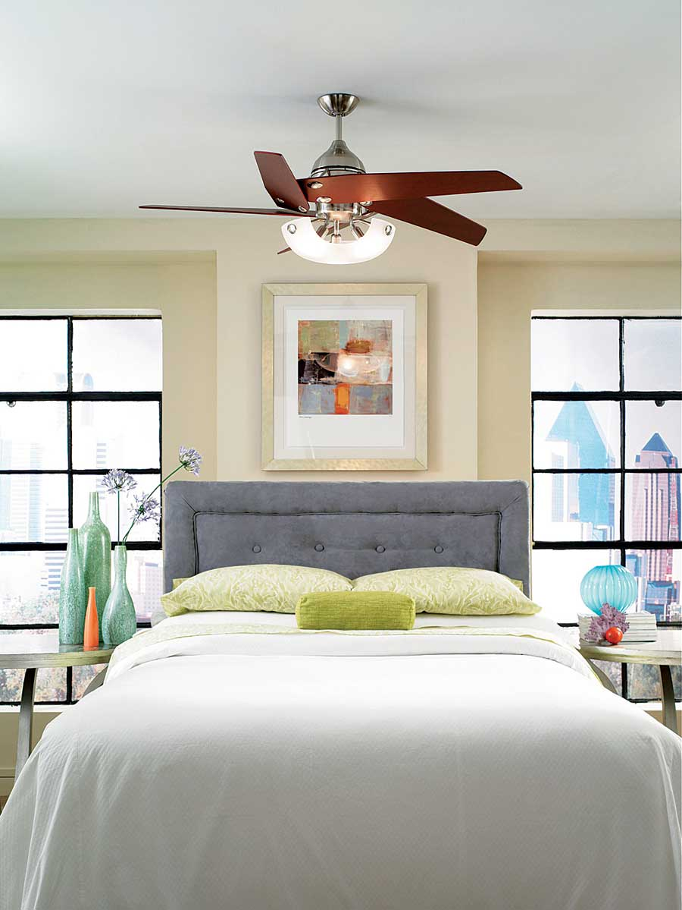

Ceiling fans don’t cool homes, they cool people. They do so without changing indoor temperature one degree! How? By moving air. The movement of air over the surface of your skin removes heat from a region physiologists call the boundary layer - a warm layer of air that surrounds us at all times. By stripping heat from the boundary layer, a ceiling fan makes us feel as if the air in the room is about 4 degrees Fahrenheit cooler. Ceiling fans are especially effective cooling fans early or late in the cooling season, when all you need is a slight temperature decrease.
If your home is energy-efficient, a few strategically placed fans may be all you need to stay comfortably cool in the summer. Even if you still need air conditioning, ceiling fans will save energy by allowing you to raise the thermostat setting. Be sure to choose an Energy Star ceiling fan.
Ceiling fans come in a wide range of styles, colors and prices. They can come with or without ceiling fan lights. Some are operated by remote control, others by wall switches in combination with pull chains. Most ceiling fans come with a switch to change the speed. In addition, most have two settings so you can control the direction in which the blades turn - one setting for winter (that brings warm air down) and another for summer. In the summer, you should be able to feel “cool” air moving if you stand directly under the fan.
Before shopping for a ceiling fan, measure the volume of the room (length x width x height), and select the right size fan for the room. When selecting a ceiling fan, bear in mind that larger rooms may require two or more ceiling fans.
Ceiling fans can be mounted close to the ceiling for low ceilings, or on a down rod (a piece of pipe that positions the fan away from the ceiling) for cathedral ceilings. If the fan is too high, it may not have much effect.
Installing a ceiling fan can be relatively easy if you’re experienced in electrical work and if there is an available ceiling light fixture with electrical connections you can use for the fan. If you’re installing a ceiling fan in a room without an overhead light fixture, you’ve got a bigger project - one that may require the services of a professional installer.
When installing a ceiling fan in a room with a ceiling light fixture, you will have to remove the existing ceiling-mounted electrical box and replace it with a fan-rated box. Regular ceiling-mounted electrical boxes should always be replaced by fan-rated boxes, attached to ceiling joists or to a support bar that attaches to joists. In most cases, ordinary electrical boxes aren’t strong enough to support a heavy ceiling fan and the force of its motion. Fan-rated boxes have deep-threaded holes or strong bolts that create a sturdy attachment for the fan.
Be sure to turn off the circuit at the breaker box to avoid shock. Test the circuit with a voltmeter to be certain you turned off the correct one before starting the job. Or play it really safe and flip the main breaker switch, turning off all power to your house.
After the fan box is in place, attach the mounting plate and thread the electrical wires through it. Use a sturdy stepladder. It’s a good idea to ask a friend or family member to stabilize the ladder and hand you tools as you need them.
After the mounting plate has been installed, assemble the fan (without blades) on the floor, following the manufacturer’s instructions. Suspend the fan temporarily on the mounting plate using a hook. Connect the wires from the electrical service to the wires that supply the motor in the fan. If you’re installing a fan with a wireless remote switch, wire the receiving unit into the fan, following manufacturer’s instructions. When the electrical connections are secure, attach the canopy (the base of the fan) to the mounting plate. Then, install the ceiling fan blades.
When installing a ceiling fan, be sure ceiling fan blades are at least 10 inches from the ceiling. If mounted closer, they will not be able to circulate air as well. To avoid injury, ceiling fans should be mounted so the blades are at least 7 feet off the floor. Even then, a person who is 6 feet tall runs the risk of bruising a hand when dressing or stretching beneath a low-hanging fan.
To learn more about cooling your home with fans, see Simple Ways to Cool Your Home and Save Big.
This article is excerpted from Green Home Improvement by Dan Chiras. Dan teaches workshops on renewable energy and green building through the Evergreen Institute.
|
 HOME DEPOT Mount ceiling fans at least 10 inches from the ceiling for adequate air circulation. |
 WWW.MONTECARLOFANS.COM Ceiling fans can make a room feel 4 to 5 degrees Fahrenheit cooler. |
|